Nace en Londres
Es el hijo mayor de Andrea Acutis y Antonia Salzano, ambos italianos, que vivían en Inglaterra por motivos de trabajo. Poco después la familia se establece en Milán.
3 de mayo de 1991 — 12 de octubre de 2006
Un adolescente de Milán que usó la tecnología para acercar a miles de personas a la Eucaristía. Hoy es San Carlo, el primer santo millennial.
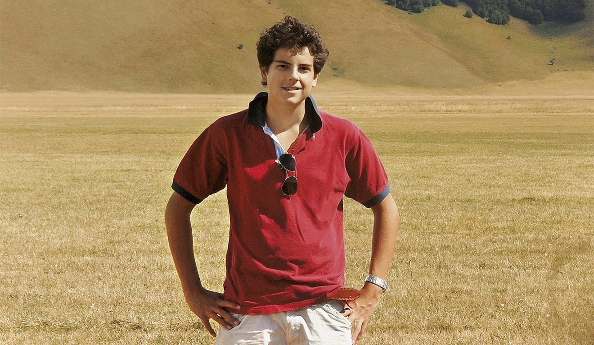
Quién fue
Carlo no tuvo tiempo de aprender a conducir, pero diseñó sitios web. En solo quince años de vida entendió que la Eucaristía era su autopista al Cielo y que internet podía ser un camino para llevar a otros hasta ella.
Biografía
De Londres a Milán, de la primera comunión a la exposición que recorrió el mundo.
Es el hijo mayor de Andrea Acutis y Antonia Salzano, ambos italianos, que vivían en Inglaterra por motivos de trabajo. Poco después la familia se establece en Milán.
Comienza la primaria en el Instituto San Carlo de Milán. Desde pequeño hace preguntas sobre la fe, que resuelve con la ayuda de quienes lo cuidan.
La recibe en el monasterio de Bernaga. Desde entonces la Eucaristía se vuelve el centro de su vida y asiste a misa todos los días.
Comienza a investigar los milagros eucarísticos de la historia. Durante cerca de dos años y medio prepara una exposición que se presenta por primera vez en 2005.
Le diagnostican una leucemia fulminante. Ofrece sus sufrimientos por el Papa y por la Iglesia, y muere el 12 de octubre de 2006, a los 15 años.
Espiritualidad
No hizo cosas extraordinarias: hizo con extraordinario amor las cosas de todos los días.
La llamaba su “autopista al Cielo”. Iba a misa a diario y pasaba tiempo ante el Santísimo Sacramento.
Se confesaba con frecuencia y rezaba el rosario. Visitó Lourdes y Fátima en peregrinación.
Ayudaba a compañeros que lo necesitaban, hacía voluntariado y tendía la mano a quienes estaban solos.
La tristeza es mirarse a uno mismo.
— Carlo Acutis
La felicidad es mirar a Dios.
Carlo y la tecnología
Aprendió por su cuenta programación y diseño web. Con esas habilidades creó un sitio para su parroquia y, sobre todo, una exposición virtual que reúne milagros eucarísticos ocurridos en veinte países.
La muestra tiene unos 160 paneles, está traducida a varios idiomas y se exhibe físicamente en parroquias y santuarios de todo el mundo. Sigue disponible en línea.
Lo cotidiano
Le gustaba el fútbol, salir con sus amigos, hacer bromas y compartir tiempo con su familia. Quienes lo conocieron lo describen como un joven sencillo y transparente.
Sabía que la tecnología es una herramienta, no un fin, y procuraba usarla para el bien.
Dedicaba parte de su tiempo al voluntariado y se preocupaba por quienes no tenían nada.
Su amistad llevó a Rajesh, su cuidador hindú, a pedir el bautismo.
Camino a los altares
La Iglesia reconoce sus virtudes heroicas.
Beatificación en Asís tras el milagro ocurrido en Brasil.
Canonizado por el papa León XIV en la plaza de San Pedro, junto a Pier Giorgio Frassati.
La canonización estaba prevista para el 27 de abril de 2025, pero se aplazó por la muerte del papa Francisco.
Milagros
Toca cada tarjeta para leer la historia.
Un vínculo con Brasil
Carlo murió el 12 de octubre de 2006, día de Nuestra Señora Aparecida, patrona de Brasil. Y fue un 12 de octubre, siete años después, cuando Matheus recibió su curación en Campo Grande.
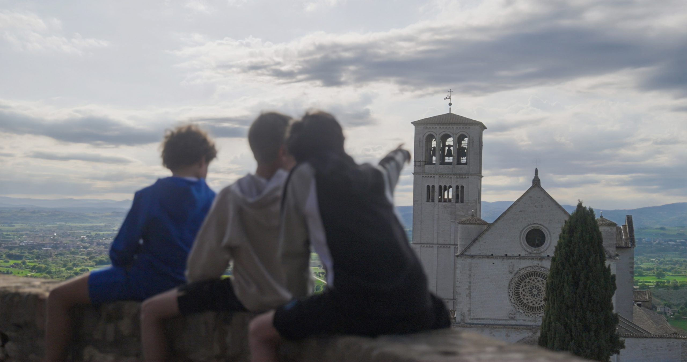
Su legado
Sus restos reposan en el Santuario del Despojo, en Asís, el lugar donde san Francisco renunció a todo para seguir a Cristo. Allí llegan jóvenes y familias de todo el mundo.
Su exposición sigue itinerando, hay parroquias y colegios con su nombre, y hasta películas y documentales sobre su vida, como El latido del cielo.
Galería
Retratos de Carlo y lugares que evocan su fe. Fotografías del sitio oficial de su documental y del álbum de Carlo.
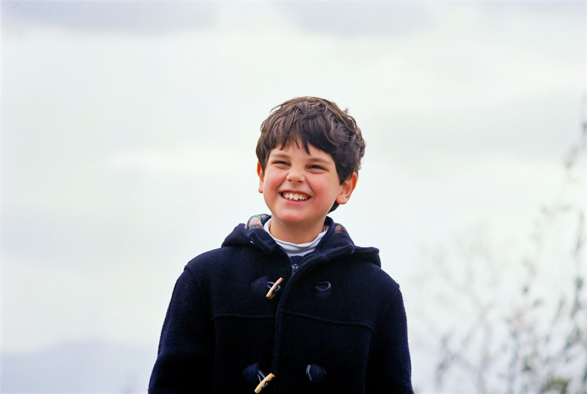
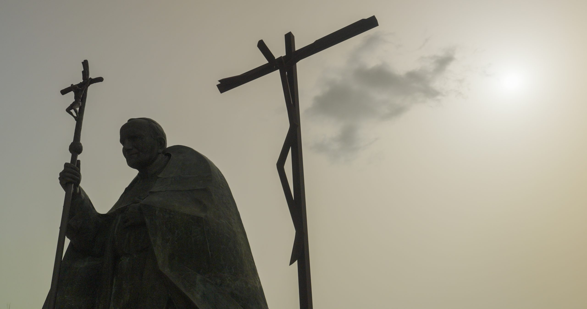
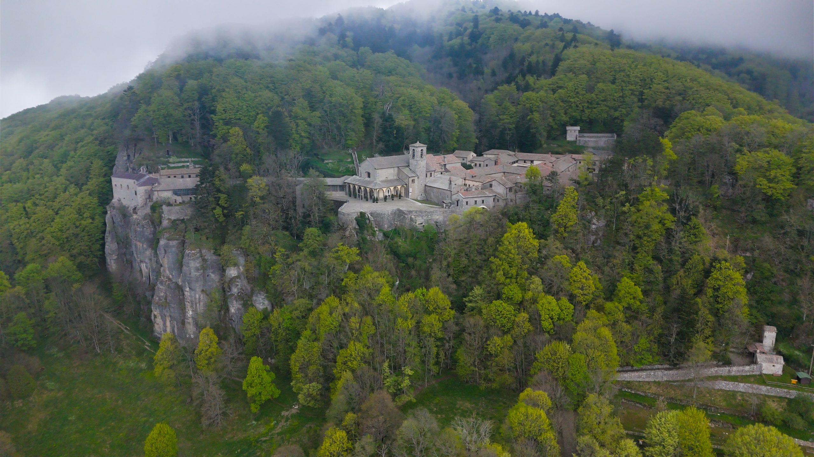
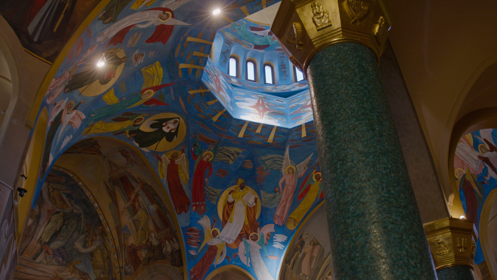
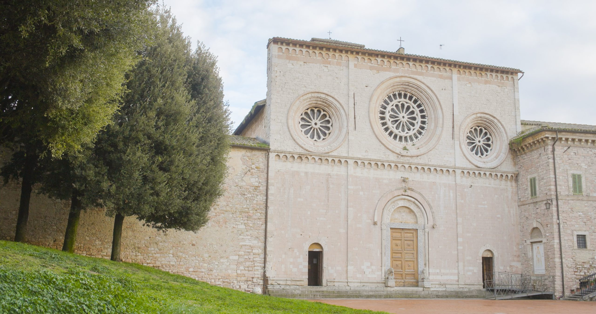
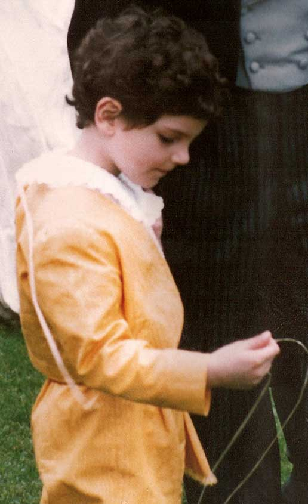
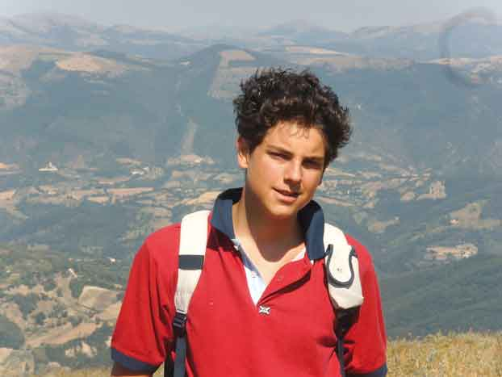
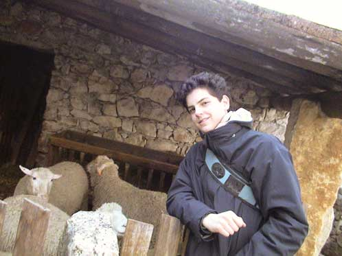
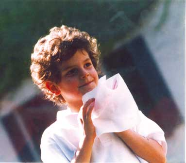
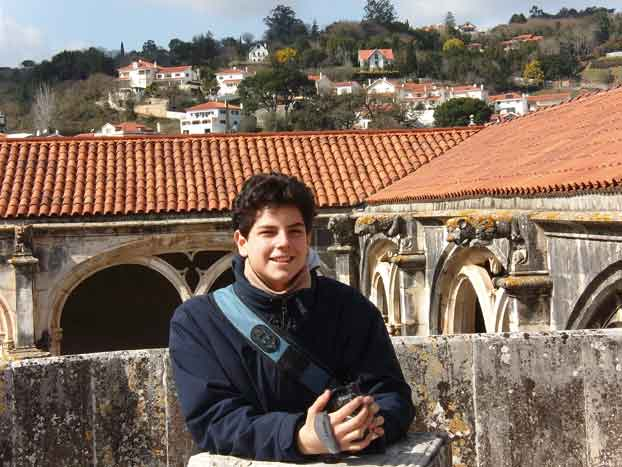
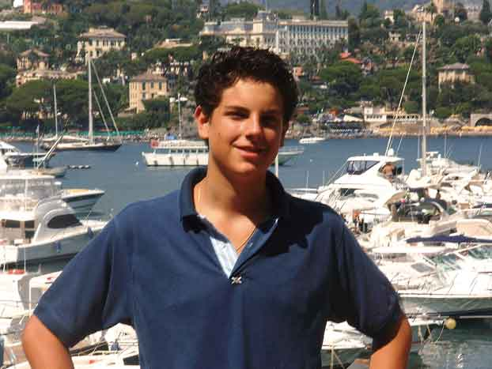
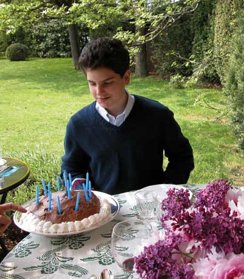
01/13
Videos
Documentales y canciones para conocer a Carlo y descubrir cómo su legado sigue inspirando.
Sus palabras
Para los jóvenes
Una pantalla puede ser una ventana para acercar a otros a lo que importa.
No copies a nadie: tu vida tiene un sello propio que Dios quiere que desarrolles.
La santidad se construye con la misa, la oración y la bondad de cada día.
La alegría llega cuando sirves, escuchas y acompañas a quien está solo.
Preguntas frecuentes
Nació en 1991, dentro de la generación millennial, y es el primer santo de esa generación reconocido por la Iglesia católica.
Porque usó la programación y el diseño web para documentar milagros eucarísticos y compartir su fe. Muchos católicos lo consideran su patrono, aunque no es un título oficial.
De leucemia fulminante, en octubre de 2006, a los 15 años. Ofreció sus sufrimientos por el Papa y por la Iglesia.
En el Santuario del Despojo, en Asís (Italia), donde su cuerpo reposa y puede visitarse.
Su memoria se celebra el 12 de octubre, aniversario de su muerte.